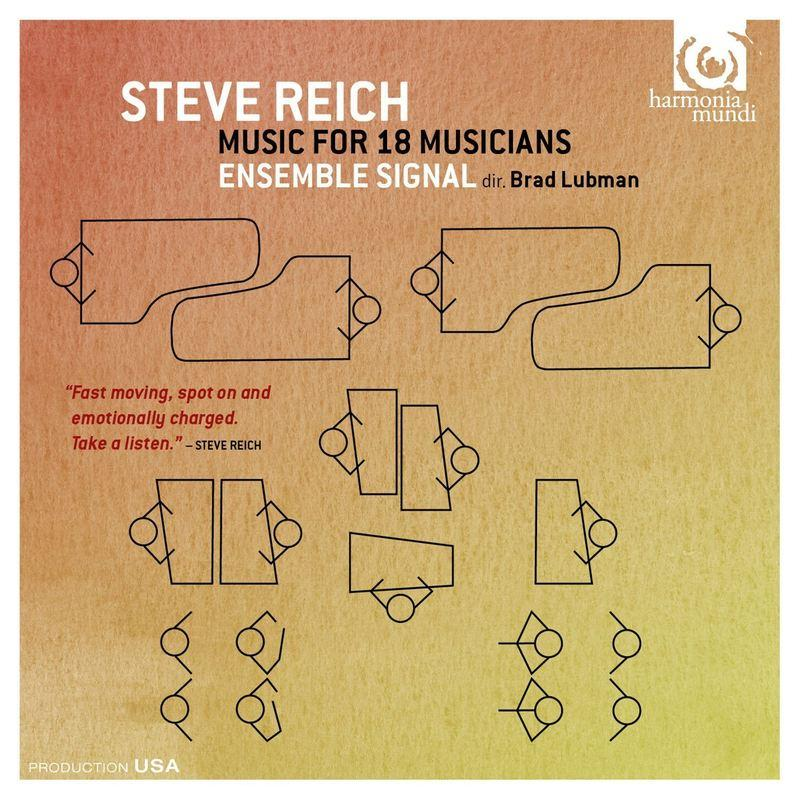

Structure in minimalist music is usually based on gradual development rather than contrasting sections. Instead of using traditional verse and chorus forms, minimalist composers often build pieces from repeating patterns that slowly evolve over time. Layers may be added or removed, and small changes in rhythm, harmony, or texture help create movement. These gradual processes allow the music to develop naturally while maintaining a strong sense of repetition.
Example:
A minimalist piece may begin with a few repeating patterns before gradually introducing additional layers and textures. These subtle changes help maintain interest without dramatically altering the music.